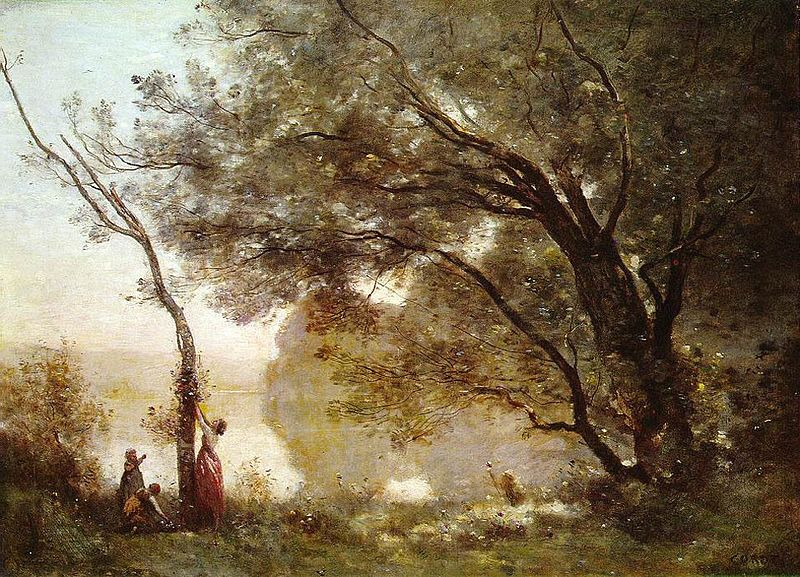

Od Corota do Moneta: nowe spojrzenie na pejzaż
Londyńska National Gallery zapowiada znakomitą wystawę poświęconą francuskiemu malarstwu pejzażowemu.
Ekspozycja „Od Corota do Moneta — nowe spojrzenie na pejzaż” dokumentować będzie rozwój tej dziedziny malarstwa aż do pierwszej wystawy impresjonistów w roku 1874.
Zaprezentowane zostaną obrazy wszystkich najważniejszych luminarzy tego gatunku z bogatej kolekcji malarstwa dziewiętnastowiecznego, przechowywanej w National Gallery. Wystawę otwierać będą dzieła Jeana Bapiste’a Camille’a Corota, Simona Denisa oraz Pierre’a Henriego Valenciennesa, autorów malowniczych pejzaży okolic Rzymu i Kampanii.
Główną część ekspozycji stanowić będą dzieła malarzy ze Szkoły z Barbizon, jak Théodore Rousseau, Jean François Millet oraz Narcisse-Virgilio Diaz de la Peña. Ukazany zostanie wpływ ich malarstwa na impresjonistów poszukujących nowych technik. Obraz Moneta „Plaża w Trouville” oraz inne jego wczesne dzieła zawisną obok nadmorskich pejzaży pędzla Eugène’a Boudina i późnych płócien Corota.
Wystawa będzie czynna od 8 lipca do 20 września 2009 roku.